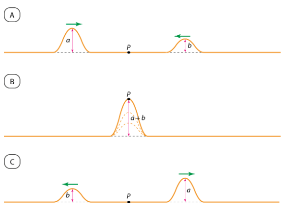
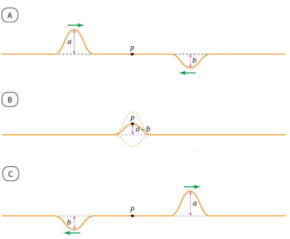
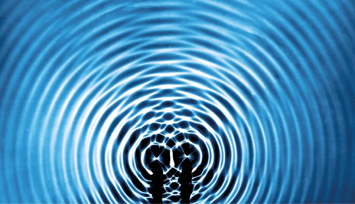

Interferência
Interferência é o termo que define a sobreposição de efeitos individuais que ocorre no instante em que dois pulsos de onda, produzidos em extremidades opostas de uma corda esticada por você e um colega, se propagam e inevitavelmente se encontram.
Se, durante a sobreposição, os pulsos se reforçam, ocorrerá uma interferência construtiva (IC). Dizemos que os pulsos produzidos individualmente pelas fontes, nessa situação, estão em concordância de fase ou, simplesmente, em fase. Após a interferência, cada pulso continua a se propagar, em sentidos contrários, com as mesmas características iniciais, sem nenhuma alteração.

Podemos ter também uma situação em que os pulsos se cancelam total ou parcialmente. Nesse caso, a interferência é chamada de interferência destrutiva (ID)

Dizemos que os pulsos produzidos, nessa situação, estão em oposição de fase. Se as amplitudes a e b dos pulsos forem iguais, no instante da superposição eles se anularão. Dizemos, então, que a interferência é totalmente destrutiva. Observe que, também nesse caso, cada pulso continua se propagando após a interferência, independentemente do outro.
A figura abaixo mostra a interferência de ondas circulares que se propagam na superfície de um líquido. As linhas circulares representam, alternadamente, cristas e vales. Note que, no encontro de duas cristas ou de dois vales, a interferência é construtiva. No encontro da crista de uma onda com o vale da outra, a interferência é destrutiva.
